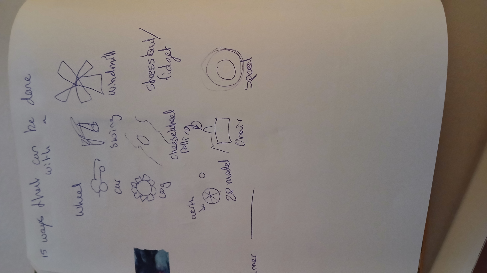
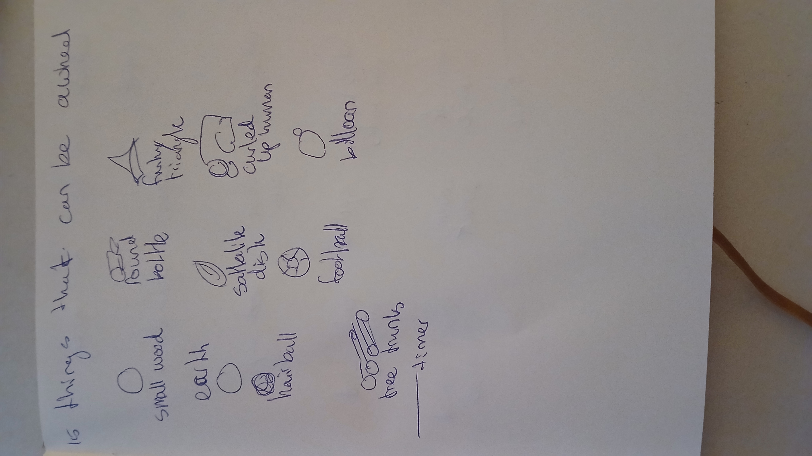
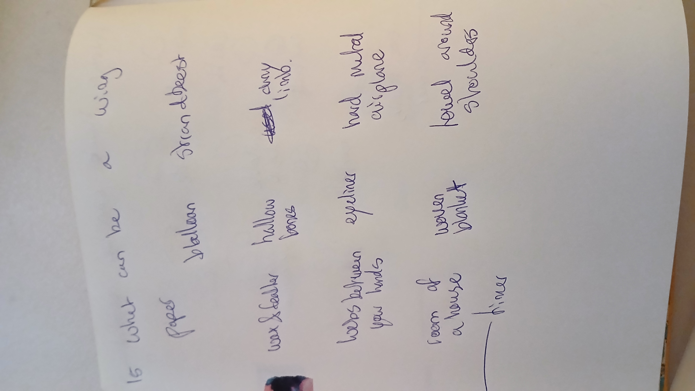

Assignment
Prototyping, sept 2026
Note 15 things that can be (done with) a [blank]. AKA: describe affordances. (Done thrice)
Tags
warm-up drawing doodle sketch Prototyping
Note 15 things that can be (done with) a [blank]. AKA: describe affordances. (Done thrice)
warm-up drawing doodle sketch Prototyping
Shown below in chronological order of the three times I did this, it's clear to see that I didn't achieve 15 things any time, but I did get closer. Part of this is that I did the first two with doodles, and omitted that on the last one. But I do also think I got more loose creatively over time.
The first two exercises I was pretty stuck on round things, thinking about whatever I know that has wheels in the literal sense. I think because the concept of wings is less rigid for me than wheels, I had more fun and ideas for the last prompt. This is something I want to learn to apply for things like wheels aswell. Nonetheless I do like my wheels and think this is a method that works very well for my brainstorming.



15 Things that can be done with a wheel: